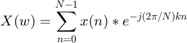

Machine Problem 2: The Comparison of DTFT and DFT Algorithms in MATLAB
Introduction
Converting time-domain signals into the frequency domain is important because some of the complex computations in the time domain can be easy in the frequency domain. At other times, FD signals provide information that TD signals can never will (e.g., bandwidth, harmonics). In this paper, we will look into some tools used in getting the spectrum of a signal (or the frequency domain representation of a time-domain signal).
Conversion or transformation can be classified according to the characteristics of the TD signal. Specifically, we look into the signal's periodicity and time characteristics (i.e. Continuous-time or discrete-time). We will only focus on an aperiodic, discrete-time signal for which the transformations used are the discrete-time Fourier transform (DTFT) and the discrete Fourier transform (DFT).
Discrete-Time Fourier Transform
DTFT converts a discrete-time, non-periodic, time-domain signal into the frequency domain. Provided that x(n) is summable, it is given by the following formula:
Obviously, it is hard to evaluate this transform if we are considering an infinite-duration signal. We can, however, cover a certain range of frequencies, say . We can therefore define a finite-duration signal required for the DTFT operation.
The characteristics of the resulting spectrum is periodic and continuous as can be seen by the following example.
Illustration 1 : Find the spectrum of
MATLAB CODE
n = 0:9; xn = (0.5).^n; figure, stem(n,xn, 'filled'); grid; title('Plot of time-domain sequence'); xlabel('n'); ylabel('x(n)');
The equivalent spectrum of this signal, with the use of DTFT, is shown in the following figure using the codes below. Note that we assume that the sequence has a period of 10 points and that x(n) here is a single cycle.
DTFT CODE
k = 0:500; w = k*pi/500; X = xn*(exp(-j*2*pi/500)).^(n'*k); figure, subplot(2,1,1); plot(w/pi, abs(X)); title('Magnitude'); grid on; xlabel('frequency(\pi units)'); ylabel('|X(\omega)|'); subplot(2,1,2); plot(w/pi,angle(X)); title('Phase'); grid on; xlabel('frequency(\pi units)'); ylabel('radians/\pi');
Analyzing signals in the frequency domain using digital signal processing would require that the resulting spectrum must also be discrete. Microcontrollers and other DSP circuits cannot handle continuous-time data. All of these devices store values in discrete memory locations or arrays.
As such, the need of a transformation that would convert a discrete-time, non-periodic, time-domain signal into a discrete-frequency, periodic, frequency-domain signal arises. That specific transformation is called the discrete Fourier transform or DFT.
Discrete Fourier Transform
The discrete Fourier transform has the following formula:

An important detail that has to be mentioned in using DFT is the variable N, which can be considered as the size of the transform. This is equivalently answering the question "how many sample points are considered for the transform?"
So let us consider a size of N = 6.
DFT CODE
N = 6; k = 0:N-1; Xw = zeros(1,length(N)); for i = 1:N Xk = xn.*exp(-j*2*pi/N*(i-1)*n); Xw(i)=sum(Xk); end figure, plot(w/pi,abs(X)); hold on; grid; stem (k/N, abs(Xw),'r'); title('DTFT vs DFT'); xlabel('frequency in \pi units'); ylabel('magnitude');
Comparing the magnitude part alone of the signal's (x(n)) spectrum, we can clearly see that DFT works like a sampler of DTFT spectrum. At this point, this hypothesis can be tested by increasing the DFT size, N.
DFT Size = 12
N = 12; k = 0:N-1; Xw = zeros(1,length(N)); for i = 1:N Xk = xn.*exp(-j*2*pi/N*(i-1)*n); Xw(i)=sum(Xk); end figure, plot(w/pi,abs(X)); hold on; grid; stem (k/N, abs(Xw),'r'); title('DTFT vs DFT'); xlabel('frequency in \pi units'); ylabel('magnitude');
DFT Size = 24
N = 24; k = 0:N-1; Xw = zeros(1,length(N)); for i = 1:N Xk = xn.*exp(-j*2*pi/N*(i-1)*n); Xw(i)=sum(Xk); end figure, plot(w/pi,abs(X)); hold on; grid; stem (k/N, abs(Xw),'r'); title('DTFT vs DFT'); xlabel('frequency in \pi units'); ylabel('magnitude');
DFT Size = 240
N = 240; k = 0:N-1; Xw = zeros(1,length(N)); for i = 1:N Xk = xn.*exp(-j*2*pi/N*(i-1)*n); Xw(i)=sum(Xk); end figure, plot(w/pi,abs(X),'LineWidth', 5); hold on; grid; stem (k/N, abs(Xw),'r', 'MarkerSize', 3); title('DTFT vs DFT'); xlabel('frequency in \pi units'); ylabel('magnitude');
Computation Speed
Speed is an important feature in any machine or system. Analyzing frequency components in a microcontroller, for example, requires that the algorithm used is fast enough. The trade-off comes with the size of the data to be transformed. Clearly, increasing the DFT size is good to get more accurate results but this would consume more time in computation.
DFT is still an inefficient way to provide a sampled spectrum of a discrete-time signal. Another algorithm hastens this computation and is called the Fast Fourier Transform, FFT. Fortunately, MATLAB has a built-in function for FFT and we can compare the speed of the two algorithms by using the following code.
DFT time
tic, dft(xn, n, 24); toc;
Elapsed time is 0.009195 seconds.
FFT time
tic, fft(xn,24); toc;
Elapsed time is 0.020601 seconds.
Note: The DFT function is not a built-in MATLAB function. We can create a user-defined function using this name instead. The code for DFT used earlier can be the definition of the said function.
Based from the result, one might argue that the speed difference is negligible. However, this difference in computation time is significant especially in real-time applications.
Summary
This paper has presented two important features regarding getting the frequency-domain representation of a discrete-time aperiodic signal. First, we showed how two algorithms (DTFT and DFT) are related and where each algorithm must be used. We saw that the DFT is just a sampled representation of the DTFT result.
Also, we briefly looked into the speed of DFT computation and that there is another algorithm that can provide the same results in a faster time. The study of FFT is not covered in this paper, but it can be derived from the DFT algorithm.
-------------------------------------------------------------------------
Submitted by:
Mark Anthony Cabilo
MEECE-CCO 2